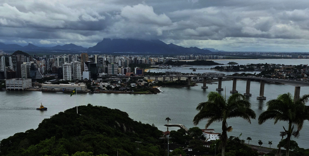
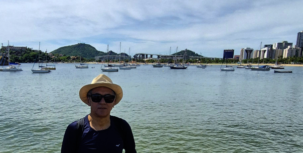

Vitória - ES
11/11/26
Saímos cedo do hotel e seguimos para a Estação Ferroviária em Belo Horizonte. Embarcamos às 6h30 no trem da Vale e partimos às 7h00 para Cariacica/Vitória, no Espírito Santo. Chegamos por volta das 20h30, desembarcamos, chamamos um carro por aplicativo e seguimos para o hotel que já tínhamos reservado no centro de Vitória. Depois do check-in, subimos para o quarto, tomamos um banho e fomos descansar.
12/11/26
Levantamos já recuperados da viagem de trem, tomamos o café da manhã no hotel e fomos para a rodoviária, onde compramos as passagens de ônibus para voltar a São Paulo no dia 14/11/26. Na rodoviária, encontramos um meio de transporte bem interessante: o Aquaviário, uma lancha de transporte público.
Compramos um bilhete e fomos até Vila Velha. Lá, visitamos a Casa da Memória e o Convento da Penha, e almoçamos em um restaurante por quilo (Ana New). Depois, chamamos um carro por aplicativo que nos levou até o Farol Santa Luzia. Voltamos a pé até a estação, pegamos a lancha para o outro lado do canal e, de lá, pegamos outra embarcação de volta para a rodoviária. Como fica perto de onde estávamos hospedados, fomos a pé para o hotel.
13/11/26
Chamamos um carro por aplicativo e fomos para a Praia da Curva da Jurema. De lá, seguimos para a Ilha do Frade, fizemos o percurso a pé pela ilha e, depois, retornamos para almoçar no Shopping Vitória.
Após o almoço, passamos pela Ilha do Boi e seguimos para a estação do Aquaviário (Praça do Papa), onde embarcamos na lancha rumo à estação rodoviária. De volta ao hotel, passamos pelas lojas de artesanato e pelo Parque Moscoso, retornando por volta das 18h30.
14/11/26
Começamos nosso circuito por volta das 8h00. Visitamos a Catedral de Vitória e o Palácio Anchieta, onde fizemos um passeio rápido e vimos a exposição Jardim do Afeto, da artista Ângela Gomes. Depois, fomos para o Sesc Glória; como ainda era cedo, apenas visitamos os espaços: subimos até o 5º andar e descemos pelas escadas. No pavimento térreo, a recepcionista foi muito gentil e nos levou para conhecer o teatro, que é muito bonito.
Logo em frente fica o Teatro Carlos Gomes, uma edificação não tão grande. Na entrada, assinamos o livro de visitas e uma moça nos guiou para mostrar o espaço, que é amplo e muito bonito.
Como ainda tínhamos um tempinho, passamos em algumas lojas, onde compramos alguns objetos. Voltamos para o hotel, pegamos as bagagens, fizemos o check-out e partimos para a rodoviária. Saímos de Vitória às 15h30 e chegamos em São Paulo às 9h40 do dia 15/11/26. A volta foi bastante demorada por conta de muitas paradas na estrada, mas, no geral, valeu muito a pena e foi muito gratificante.
Foram dias intensos, desses que cansam o corpo, mas descansam a alma.

Vista da praia da Curva da Jurema
Que viagem incrível! 🚆🌊 Saímos de SP, curtimos Belo Horizonte (com direito a 20 km de bike na Pampulha e queijos no Mercado Central) e pegamos o trem da Vale rumo ao Espírito Santo. Entre lanchas, praias e muita cultura em Vitória e Vila Velha, cada parada valeu muito a pena!
🚆✨ De São Paulo ao Espírito Santo: dias inesquecíveis na estrada e nos trilhos! Acabamos de voltar de uma viagem maravilhosa entre Minas Gerais e o Espírito Santo (08 a 15 de novembro) e quero compartilhar um pouquinho dessa aventura com vocês! Nossa jornada começou saindo de São Paulo de ônibus rumo a Belo Horizonte. Mesmo com um pequeno imprevisto na estrada e um pouco de chuva na chegada, aproveitamos muito a capital mineira: pedalamos de bicicleta elétrica ao redor da Lagoa da Pampulha (cerca de 20 km!), passeamos pelo Parque Municipal e, claro, garantimos os queijos e doces no tradicional Mercado Central. O ponto alto da viagem foi embarcar cedo no famoso trem da Vale, cruzando paisagens incríveis de BH até Cariacica/Vitória, no Espírito Santo — uma viagem longa, de mais de 13 horas, mas que vale cada minuto! Em solo capixaba, exploramos tudo o que tínhamos direito: 🚤 Atravessamos a baía no Aquaviário (transporte público de lancha!) para conhecer Vila Velha, subimos ao Convento da Penha e visitamos o Farol Santa Luzia. 🏖️ Caminhamos pela Curva da Jurema, Ilha do Frade e Ilha do Boi. 🏛️ Mergulhamos na cultura e na história do centro de Vitória, passando pela Catedral, pelo Palácio Anchieta, pelo Sesc Glória e pelo belíssimo Teatro Carlos Gomes. Voltamos de ônibus para São Paulo com a bagagem cheia de boas histórias, fotos lindas e o coração grato por cada quilômetro percorrido. ❤️📸